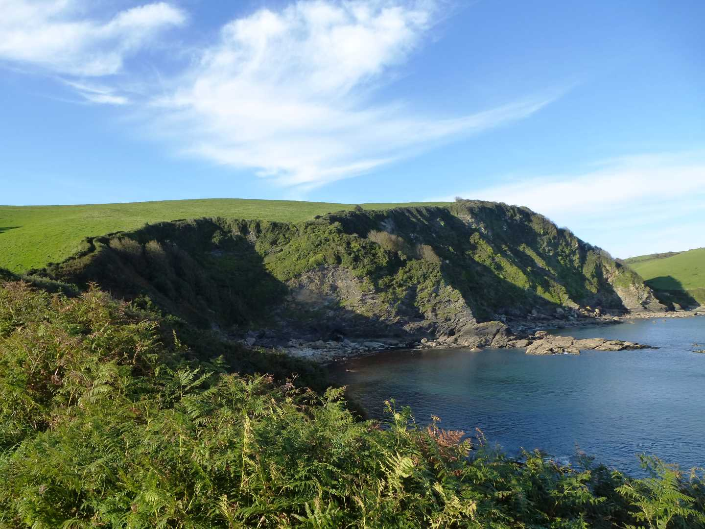
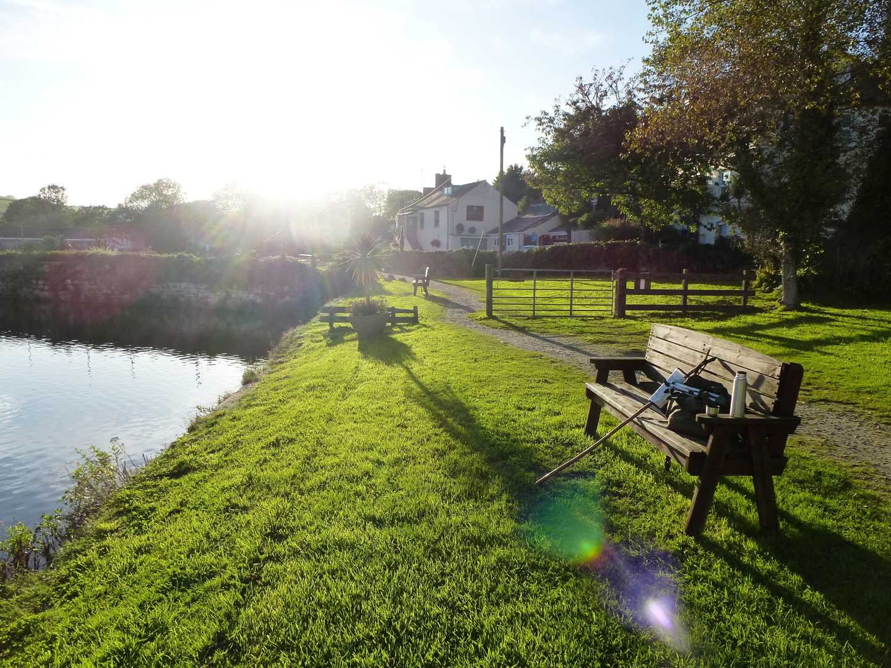

Start Ref: 030 490
End Ref: 030 490
Distance: 3 miles
Time: 2hrs
This walk, we were able to squeeze in after walk, just before the clocks changed this week. Trenarren is a little (lovely) hamlet just outside of St. Austell on the way to Black Head, which in itself is a gentle walk with great views.
However, for this walk we left the car in the car park just above the hamlet, and headed right, down the road and through the hamlet, until this road turned into a path and then we pass just above a private house (Hallane) which is situated right on the coast and just above a hidden beach.
Behind the house the footpath bears West (right) and starts to lead you up a path, passing a bubbling stream with a few little steps of waterfalls until you cross left over a footbridge and up a steepish path until you come out of the trees and into fields which are now the staple of this walk, and from which we are afforded glorious views of Mevagissey Bay.
The footpath is well defined and well marked, so the path is now easy to follow. This is useful, as at times I was concentrating it is also steep and I was concentrating on views and hydration as much as the map! We pass above the stunning Polrudden Cove and as we reach Gamas Point, we gain our first view of the long golden beach at Pentewan.
The footpath itself leads you down passing the Church on the side of the hill and a few houses before joining the road.
Here my route turns us North East (right) and up the hill, but I thoroughly recommend walking down to the village and taking advantage of either the toilets or the pub and having a look at the beach and old harbour.
After our drink, we head back up the road. This is a steep one and we will be on it for about ¾ mile. We will pass two farm entrances on our right (Polrudden and Porthtowan) before taking the third right hand turn (East) which is on the brow of the hill as the road bears around to the West (left). Follow this along until you get to the farm house and then turn North (left) and back into the fields as you head down hill. Here you get to a small footbridge and enter into another field.
Choice, either follow the hedge on your right – the path will lead you down to intersect the first part of the route at Trenarren, OR (as I do) turn left and up the side of the field, go through the gate and turn immediately right through another gate and down a rather slurried path until you come to yet another field.
This gate takes you into a little used path that leads between fields and brings you out (seemingly) into the back gardens of some of the houses in Trenarren. It doesn`t, don`t worry.
When you meet the road, turn North (left) and make your way leisurely back to the car at the top of this road.